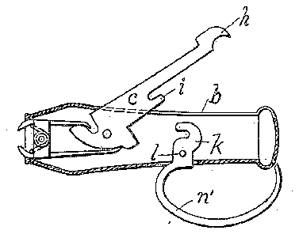
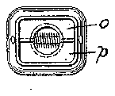
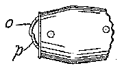
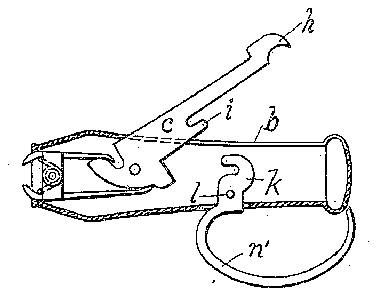
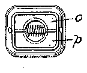
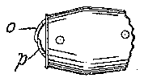

- 1pair
- 2catch member
- 5laterally projecting pin
- 6slot
- 8slot
- 17ring
- 70mating catch member
- 71retaining catch
- 72jaws
- 79jaws
Description
A. W. BABE.
CLIPPER.
APPLICATION FILED JUNE 3, 1909.
MQJWQ, Patented Feb. 22, 1910.
WITNESSES; N
ATTORNEYS.
AUGUST W. BABE, 0F NEWARK, NEW JERSEY.
CLIPPER.
Specification of Letters Patent.
Patented Feb. 22, 1910.
Application filed June 3, 1909. Serial No. 499,983.
To all whom it may concern:
Be it known that I, AUGUST IV. BABE, a citizen of the United States, residing in the city of Newark, county of Essex, and State of New Jersey, have invented certain new and useful Improvements in Clippers; and I do declare the following to be a full, clear, and exact description of the same, such as will enable others skilled in the art to which it pertains to make, construct, and use the same.
My invention relates to clipping devices, and the construction of the same is applicable to nail clipping devices, cigar clipping devices and kindred instruments.
In the physical embodiment of my invention, I have illustrated the same in the drawings as applicable to a nail clipper, and also to a cigar clipper. These two applications of my invention, however, do not embody all of the uses to which the invention may be put, but serve simply to illustrate the structure as a whole.
The principal object of my invention is to provide a clipping device of such a na ture, that it may be used for the purposes intended, and also serve the additional purpose of an ornamental watch charm or kindred ornament, and embody the use of an ornamental casing in which is inclosed the operative mechanism for actuating the jaws of the clipper.
In the accompanying drawings illustrat ing the principle of operation, I have shown several modifications of the means for retaining the actuating lever in its position within the contour of the casing.
Figure 1 illustrates a plan view of my improvement. Fig. 2 illustrates a longitudinal section of the same, showing the cam lever in closed position. Fig. 3 illustrates a similar view with the cam lever and jaws open, showing a modified form of latch. Fig. at illustrates a side view of a modified form of the means for retaining the cam lever within the casing. Fig. 5 illustrates a still further modification of the means for retaining the cam lever within the casing. Fig. 6 illustrates a detail of the modification shown in Fig. 5; and Figs. 7 and 8 illustrate respectively a front end and a partial side view of my invention, as a cigar clipper.
Similar letters of reference refer to like parts throughout the specification and drawings.
In the several views illustrating my improvements, a represents a tubular case of more or less ornamental contour for containing the working parts of the device. This case is provided on its upper side with a slot 6, through which the pivoted cam lever 0 may project. This lever c is pivoted in the casing at (Z, and has the forward cam projection e and the lower cam projection f. The lever 0 also projects rearwardly and is provided at its rear end with a shoulder g and a sharp -pointed cleaning device it. Upon its under side and about midway of its length, I locate a rigid catch member 2', which is utilized in connection with a mating catch member 70 for retaining the lever c in its closed position as illustrated in Fig. 2. This catch member is is pivoted in the case at Z, and projects through an opening m in the side of the case, and terminates either in the ring a or the projecting hook or loop arm n as illustrated respectively in Figs. 2 and 3. The purpose of the ring ais to serve as a means for releasing the operating lever c, to permit it to swing into the position shown in Fig. 3. The ring 17. also serves as a means by which the clipper may be attached to a watch chain or other device connected with the person of the user.
The forward end of the case 0 is open as illustrated in the several views, and from this open end project the jaws 0 and 79, each provided with the ears 0 and 7) respectively, by which the jaws are pivoted to the case by means of the pivot g. Surrounding the pivot g is a coiled spring 9, the ends of which are bent outwardly, and bear upon the ends of the jaws 0 and 72 to spread them apart as illustrated in Fig. 3. The jaws 0 and 79 extend rearwardly, the jaw 0 having the arm 0 which bears upon the cam c of the lever c. The jaw 79 has the corresponding but longer arm 79 for cooperation with the cam f of the lever c.
In operation, when the locking catch f is released from the catch member 2', the spring 9 bearing with its ends upon the jaws 0 and p, serve to spread said jaws, as above described, and having a considerable tension, will throw the lever into the position illustrated in Fig. 3. In this position, with the jaws open and the lever 0 as shown, as pressure is brought to bear upon the lever c to press the same into the body of the case a, it will be readily seen that the jaws 0 and p are brought together, and inasmuch as they are provided with sharp cutting edges, will retain the same in position.
clip any article, as for example, the finger nail.
The exposed surface of the lever 0 is provlded with a file for use as a nail file.
The structure illustrated in Fig. 3 with the loop a, may be used merely as a pocketcase a as shown in Fig. at. When the proj ecting end 9 of the lever 0 is in the position shown, this loop 7 may be swung over said projecting end 9 and thus retain the same in position. If desired, I may secure a ring a to the outside of the case a, as a means for attaching the clipper to the person of the user, as for example, to his watch chain.
As a still further modification of the means for retaining the lever 0 within the case, I may use the structure illustrated in Figs. 5 and 6, wherein the retaining catch 71 is located near the extremity of the lever 0 and adjacent to the end of the case a, thereby forming an open slot 2' in the end of the lever 0. Projecting axially from the end of the case a, I place the sliding catch member .9 having the laterally projecting pin 5 extending through the slot 8 in the end of the casing, as shown in Fig. 5. This pin 8 is designed to enter the slot of the lever 0 and pass over a small hump d in said slot to I may also provide the sliding catch member s with an external ring 8 as a means for attaching the entire structure to the person of the wearer, as for example, to his watch chain. It will be clearly seen that when the catch member s is pulled outwardly to the limit of the slot 8 the lever 0 will be released, when it may be operated in the manner hitherto described in connection with the other modifications.
Other means for retaining the lever 0 within the case may be used if desired, those illustrated merely serving to show several forms which my improvements may take.
In Figs. 7 and 8, I have shown the jaws 0 and p as overlapping, and provided with cutting edges suitable for clipping the tips from cigars, the aws in each case being shown in the position corresponding to Fig. 3, the operation of which will be readily understood from the other drawings.
Other forms of jaws for other purposes may be provided, the particular use for which will suggest the particular form or contour of the cutting edge to the maker or user.
I claim:
1. A clipper comprising a closed casing, a pair of cutting jaws each pivotally secured within said casing and means for opening and closing said jaws.
:2. A clipper comprising a closed casing, a pair of cutting aws each pivotally secured within said casing, a spring for opening said jaws and a lever pivoted in said casing for closing said jaws.
3. A clipper comprising a closed casing open at one end, a pair 01" cutting jaws each pivotally secured within said casing, the cutting faces of said jaws protruding from the opening in said casing, a lever for operating said jaws, pivotally secured in said casing, one arm of said lever extending through an elongated slot in the side of said casing, whereby the jaws may be operated.
4. A nail clipper comprising a closed casing open at one end, a pair of cutting jaws each pivotally secured within said casing, the cutting faces of said jaws protruding from the open end of said casing, a spring for opening said aws, a lever pivoted in said casing for closing said j aws, one arm of said lever projecting through a slot in said casing and latch means for holding said lever and jaws in the closed position.
5. A nail clipper comprising an inclosing case open at one end, a pair of cutting jaws pivotally mounted in said case, the cutting faces of said jaws protruding from the open end of said case, a lever pivotally secured in said case and projecting through an elongated slot in the side thereof, whereby said jaws may be operated and a latch pivoted in said case and projecting through the case opposite said elongated slot, said latch operating to lock said lever in closed position.
This specification signed and witnessed this 29 day of May, 1909.
AUGUST W. BABE.
Witnesses LoUIs M. SANDERS, C. A. ALLIsToN.